Congestion Control Implementation
Recap: TCP Windows
So far, we’ve designed a conceptual sketch of a dynamic adjustment, host-based algorithm, where each source runs the same algorithm independently to arrive at an efficient, fair share of bandwidth.
First, use slow-start (start at low rate, exponentially increase) to discover an initial rate. Then, in each iteration, if we detect congestion (detect loss), we reduce R multiplicatively. If we don’t detect congestion, we increase R additively.
In this section, we will now see how TCP implements this algorithm. For better or worse, TCP’s congestion control mechanisms are very intertwined with TCP’s reliability mechanisms. (This is a result of the original design, where TCP was patched to account for congestion.) In this section, we’ll see how TCP’s implementation works to achieve both reliability and congestion control at the same time.
Recall that in TCP, the sender maintains a sliding window of consecutive bytes/packets in flight. The size of the window is determined by flow control (decided by buffer space at recipient) and congestion control (rate computed by sender).
More specifically, in flow control, the recipient sends an advertised window, indicating how many more bytes can be sent without overflowing the recipient’s memory. This advertised window value is sometimes abbreviated RWND (receiver window).
In congestion control, the sender maintains a value, sometimes abbreviated CWND (congestion window), which denotes the rate the sender can send packets without overloading links. This value will be dynamically set and adjusted by the congestion control algorithm.
The sender’s window is computed as the minimum of CWND and RWND. For this lecture, we’ll assume that RWND is larger than CWND, so the bottleneck is the network, not the recipient’s memory. This is usually, but not always true in practice.

Recall that we can view the sliding window as a range in the bytestream. The left side of the window is the first unacknowledged byte (everything to the left of the window has already been sent and acknowledged). The right side of the window is determined by the window size. Only packets inside this window are allowed to be in-flight.
When data on the left side of the window is acked, the window slides to the right, and additional data can now be sent.
To detect loss, we maintain a single timer for the left-most packet in the window. If the timer expires without that packet being acked, we re-send the left-most packet in the window. Also, to detect loss, we count the number of duplicate acks, and re-send the left-most packet if we see 3 duplicate acks. This duplicate ack-based approach is sometimes called fast retransmit.
Windows and Rates
How do we adjust the rate for congestion control, and how do we compute the congestion window? It turns out that these two values are directly related, and adjusting the window is achieved by adjusting the rate. The window size and the rate of sending data are correlated by the following equation: rate times RTT = window size.
Intuitively, you can think of window size and rate as the same quantity, expressed in two different “units of measurement.” An increased window size means we’re sending data faster, and vice-versa.
To see why this equation holds, consider the first RTT. We can send [window size] number of packets during this first RTT (before any acks arrive), for a rate of window size / RTT.
Recall that our conceptual TCP design measured data in packets for simplicity, but in practice, TCP thinks in terms of bytes. In a real implementation, the window size is measured in terms of bytes, but for simplicity, we will consider the window size in terms of packets.
To convert between packets and bytes, recall that we defined the Maximum Segment Size (MSS), the number of bytes per packet. This tells us that MSS times number of packets = number of bytes. Again, intuitively, you can think of bytes and packets as two different units of measurement for the same quantity (amount of data).
Event-Driven Updates
In our conceptual model, our goal is to adjust the rate/window once per “iteration,” but we haven’t formalized how to measure each iteration. We can roughly define each iteration as one RTT, but the RTT itself is a dynamically changing value that we can’t accurately measure.
In order to update the window size in a more predictable, measurable way, we can consider the various events that the existing TCP implementation responds to, and update the window each time one of these events occurs. These are called event-driven updates.
The three TCP events where we need to update the window size are: new ack, 3 duplicate acks, and timeout.
When we see a new ack (for data that was previously not acknowledged), this is a sign that our data made it through the network without loss. In our model, we detect congestion by checking for loss, so a new ack is a sign that the network is not congested. Therefore, when we see a new ack, we can increase the window size (either during slow-start discovery, or AIMD adjustment).
When we see 3 duplicate acks, we mark a packet lost. This is a signal of isolated loss, which indicates mild congestion. We lost a packet, but subsequent packets are still being received. To react to this loss, we will decrease the window size (during AIMD adjustment).
When we encounter a timeout, we mark a packet lost. The fact that we detected the loss after a timeout, not duplicate acks, is a signal of many packets being lost (heavy congestion). To see why, consider a window size of 100 packets. If we encounter a timeout, this means we didn’t get an ack for the left-most packet in the window. But it also means that we failed to get 3 duplicate acks for any other packets in the window during the entire duration of the timer. A timeout means that very few, if any, packets are being received, and something bad has happened.
If we discover a timeout, something unexpected has happened (e.g. network changed), and we should no longer trust our current window size. To react, we should go back to the slow-start phase and re-discover a good window size. This isn’t the only way to react to timeout, but this is what TCP decided.
Event-Driven Slow Start
In our conceptual model, we implemented slow start by choosing a slow rate, and increasing the rate exponentially (e.g. doubling on each iteration) until we encounter the first loss. We now need an event-driven way to double the window once per RTT.
TCP starts with a small window of 1 packet. Recall, we can convert packet to bytes with the maximum segment size (MSS), and then convert bytes to rate by dividing MSS/RTT.
Every time we get an acknowledgement, we will increase the window size by 1 packet. The intuition for what will happen is:
Initially, the window size is 1 packet. We send 1 packet, and after an RTT, get 1 ack back. The ack lets us increase the window to 2 packets.
We now send 2 packets, and after an RTT, we get 2 acks back. The 2 acks let us increase the window by another 2 packets, for a new window size of 4 packets.
We now send 4 packets, and after an RTT, we get 4 acks back. The 4 acks let us increase the window by another 4 packets, for a new window size of 8 packets.
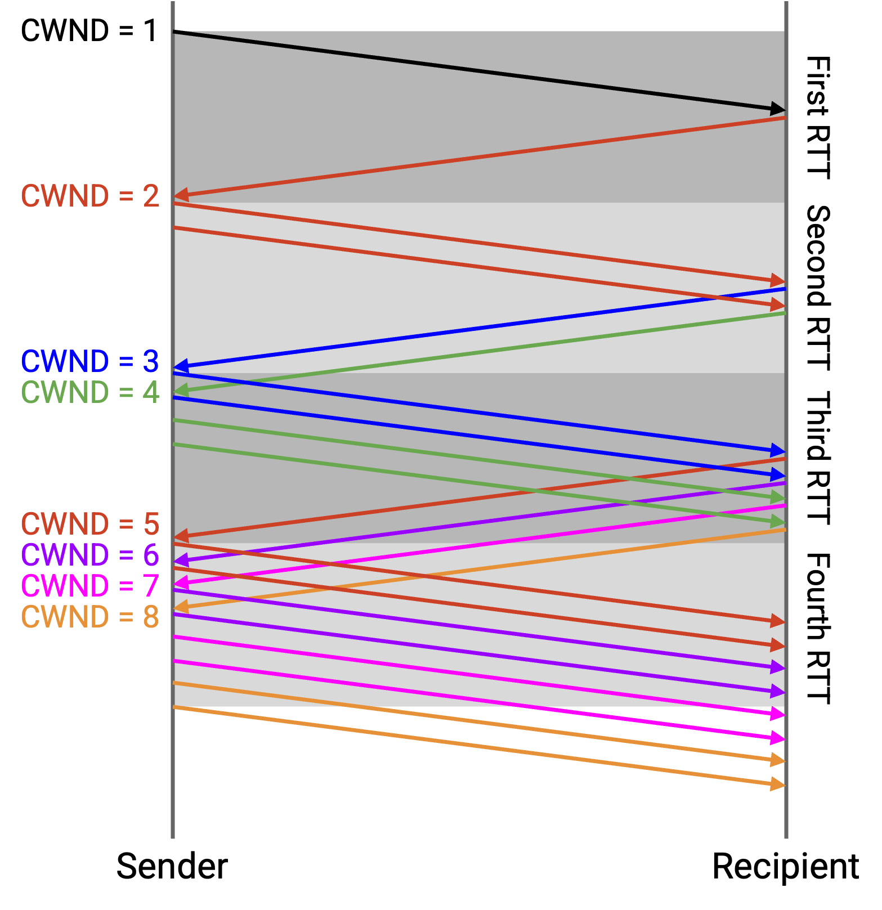
This intuitive picture assumes we are sending all 4 packets and receiving all 4 acks simultaneously, though. In practice, the sliding window behavior causes our window to increase by 1 each time we receive an ack, though the end behavior (doubling the window every RTT) is the same.
As before, we start with a window size of 1 packet. We send 1 packet (A), and after an RTT, get the ack for A back. The ack lets us increase the window to 2 packets, and there are zero packets in flight.
Next, we can send out 2 packets (B and C). When we get the ack for B, we increase the window to 3 packets. There is still 1 packet in flight (C), so we can send 2 more packets (D and E).
When we get the ack for C, we can increase the window to 4 packets. There are still 2 packets in flight (D and E), so we can send 2 more packets (F and G).
In general, assuming no loss and no re-ordering, every time we receive an ack, the sliding window allows us to send one more packet, and the increased window allows us to send another packet. Because every ack leads to 2 packets being sent, we get the behavior where the window doubles every RTT. For example, within an RTT interval where we receive 16 acks, each ack triggers to packets being sent, for a total of 32 packets. Then, in the next RTT interval, those 32 packets will be acked, triggering 64 packets being sent.
Eventually, after some time spent doubling the window every RTT (increasing the window by 1 for every ack), we’ll encounter loss. This also means we’ve learned the maximum allowable “safe” rate for sending packets without encountering loss. We’ll remember this rate in a new parameter called SSTHRESH (slow start threshold). Specifically, as soon as we encounter packet loss, we’ll set SSTHRESH to half the window size. For example, if a window of 16 packets doesn’t cause loss, but a window of 32 packets does cause loss, then we would set SSTHRESH to 16.
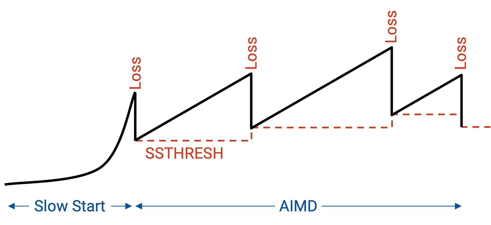
Recall that after slow start, we will continually adjust the window size (AIMD). SSTHRESH lets us remember the safe rate we learned from slow start, even as the rate starts changing later.
Implementing Additive Increasing
In our conceptual model, after slow start, we want to slowly (additively) increase the rate when there’s no loss. We need an event-driven way to increase the window by 1 packet for each RTT.
We don’t have an exact number for the RTT, but we do know that within a single RTT, we expect a window’s worth of packets to be acked. For example, with window size 10, we receive 10 acks per RTT. If we increase the window by 1/10 packet per ack, then across a RTT, the window should increase by 1 packet, as desired.
Each time we receive an acknowledgement, we will take the current window size CWND and reassign it to CWND + (1/CWND). This increases the window by a fraction of a packet on each ack. After a full window’s worth of packets (i.e. after one RTT), the window increases by 1 packet.
Formally, TCP measures the window in bytes, not packets, so (1/CWND) is equivalent to MSS * (MSS/CWND) in bytes. In (1/CWND), the numerator is 1 packet (total increase in an RTT), and the denominator is CWND measured in packets. Since the denominator is now measured in packets, we also have to measure the numerator in packets: 1 packet = MSS bytes.
But the fraction 1/CWND or MSS/CWND is still a ratio (dimensionless), representing the fraction to be increased on each ack. The total increase we want is 1 packet = MSS bytes, so we have to multiply this fraction by MSS bytes.
As an example, suppose our CWND was 3 packets = 150 bytes (assuming MSS = 50 bytes). In the packet view, we would add 1/3 packets to the window each time, for a total increase of 1 packet.
In the byte view, we can divide MSS/CWND = 50/150 to get the same 1/3 ratio that we need to step by each time, for a total increase of 1. But we still need to multiply by MSS so that the total increase is MSS instead of 1.
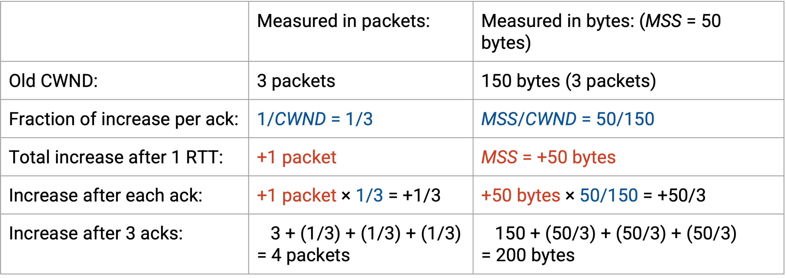
Note that the increase isn’t perfectly linear, but provides a good enough approximation. For example, starting with CWND = 4, the first update is 4 + 1/4 = 4.25, and the second increase is 4.25 + 1/4.25 = 4.49. After four updates, the window size would be 4.92 in this approximation (we wanted it to be 5 in the exact model).
Implementing Multiplicative Decrease
If we detect loss from 3 duplicate acks, we divide the window size by 2.
Recall that if the retransmission timer expires, we interpret the timeout as multiple packets being lost (we didn’t even get duplicate acks). We assume that the current window might be way off, and in order to be cautious, we’ll rediscover a good rate from scratch.
First, we’ll make a note that the current rate is too high, and the best known safe rate is half of our current rate (following the multiplicative decrease principle). To record this safe rate, we’ll set SSTHRESH to half the current window.
Then, we’ll set the window size back to 1 packet, and repeat the slow start process again.
Note that when we re-try slow start, we need to be careful not to return to the dangerous rate with timeouts from earlier. Fortunately, we set SSTHRESH to be just below the dangerous rate. Therefore, in subsequent slow start re-trys (where SSTHRESH is set), as soon as our window exceeds SSTHRESH, we should switch from multiplicative to additive increasing. On the first slow start, SSTHRESH is unset (or infinity).
To summarize: In slow-start, we increase the window by 1 packet for each ack (results in doubling the rate on each RTT). When in AIMD, we increase the window by a fraction of the window size for each ack (results in increasing by 1 for each window’s worth of data). We decrease the window by halving it when receiving 3 duplicate acks, and changing it to 1 on a timeout.
Note that when decreasing, we never drop the window size to less than 1 packet. In the worst case, we need to allow 1 packet to be in-flight.
TCP Sawtooth
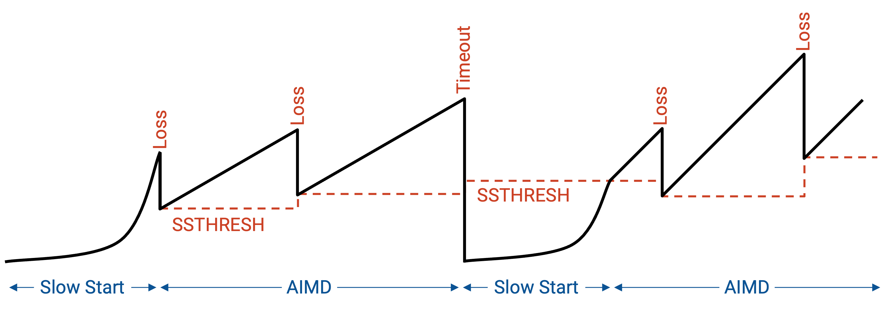
If we plot rate over time, we see the initial exponential growth (slow start). As soon as we experience loss, we cut the rate in half, and switch to AIMD mode. Now, we increase linearly until we encounter loss, and we halve the rate each time we encounter loss.
Fast Recovery: Running Example
There’s one final problem we have to deal with in our congestion control implementation. When we encounter an isolated packet loss, the congestion window is halved, as intended. However, this has the unintended side effect of causing the sender to stall for some time before it can continue sending packets.
To see this in action, let’s consider a running example. We send 10 packets, numbered 101 through 110. The first packet (101) is dropped.
As a result, the other 9 packets, 102 through 110, are all acked as ack(101), because the next expected byte is still 101.
After the third duplicate ack(101) (generated by receiving 102, 103, and 104), the sender re-sends 101.
Eventually, the ack for the re-sent 101 arrives. It says ack(111), because packets 102 through 110 were all received earlier, and with the receipt of 101, the next expected byte is 111.
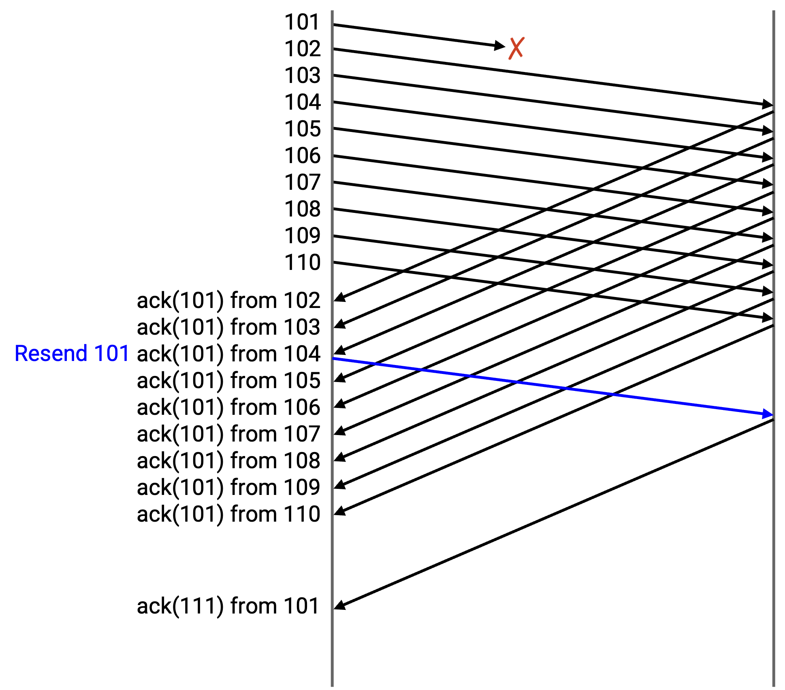
To summarize: At the sender’s end, we send 101 through 110, and 101 gets dropped. We get ack(101) from 102, ack(101) from 103, and ack(101) from 104. At this point, we re-send 101. Then, we get ack(101) from 105 through 110. Finally, we eventually get ack(111) from 101.
At the recipient’s end, we receive 102 through 110, and send back ack(101) each time, since the next unreceived byte is still 101. Eventually, we receive the re-sent 101, and we send back ack(111) because the next unreceived byte is 111.
What does CWND look like during this running example? Remember that the window starts at the first unacknowledged byte, and extends for CWND contiguous bytes. The only way to shift the window forward is to receive the first unacked byte. If we receive acks for some other bytes in the window, the window stays the same, because the window is determined by the first unacked byte.
Fast Recovery: The Problem
Let’s assume that CWND starts at 10. Packets 101 through 110 are allowed to be in flight. The sender sends 101 through 110, but 101 is dropped.
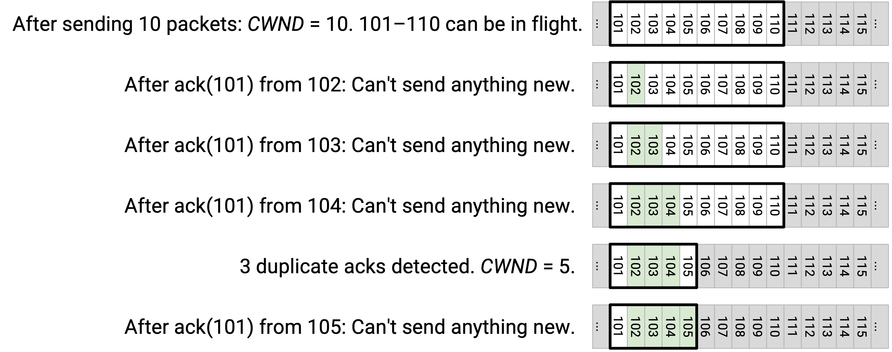
The sender sees ack(101), generated from the other side receiving 102. At this point, the first unacked byte is still 101, so the window stays unchanged. The only packets allowed to be in flights are still 101 through 110, and the sender cannot send anything new (e.g. 111 can’t be sent).
Next, the sender sees ack(101), generated from the other side receiving 103. Again, the first unacked byte is still 101, so the window is unchanged. The window still starts at 101 and extends to 110, and the sender can’t send anything new.
Next, the sender sees ack(101), generated from the other side receiving 104. This is the third duplicate ack, so we must decrease CWND to 5. The first unacked byte is still 101, and CWND is 5, so packets 101 through 105 are allowed to be in flight. The sender still can’t send anything new. We re-send 101 (left-most packet in window) because we saw the third duplicate ack.
Next, the sender sees ack(101), generated from the other side receiving 105. The window is still 101 (first unacked byte) through 105 (CWND bytes later), so we can’t send anything new.
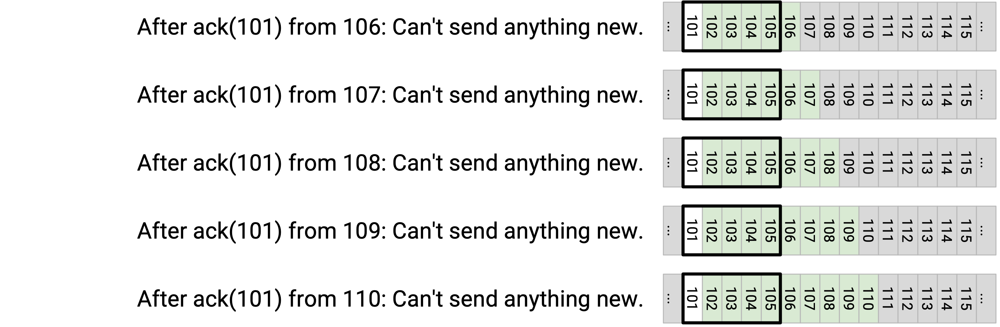
Next, the sender sees ack(101), generated from the other side receiving 106. Again, the window doesn’t change, and we can’t send anything new.
The sender gets ack(101), ack(101), ack(101), ack(101) from the other side receiving 107, 108, 109, 110. In every case, 101 is still the first unacked byte, so the window is still 101 through 105, and the sender can’t send anything new.
What happened here? Only a single packet was dropped, but as a result, the sender had to completely stop sending for a long time.
The window is defined by the first unacked byte, so the window refuses to move forward until 101 is re-sent and acked. Even though all the other packets (102 through 110) arrive, the window is still stuck at 101, and later packets (111 onward) can’t be sent. The sender is stalled!
Eventually, the sender receives ack(111) from the re-sent 101. This causes the window to leap forward and slide to the new first unacked packet, 111. CWND is still 5, so the sender is now able to send 111 through 115.
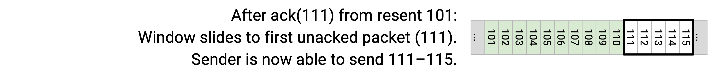
What happened here? We now have a secondary problem. The sender stalled for a long time, but as soon as 101 was acked with ack(111), the window leapt forward all the way to 111-115, and the sender suddenly has to scramble to send 111-115 all at the same time.
The sender stalled for a long time, sending nothing, and then suddenly scrambled to send 111-115 at the same time. Now, the sender has to wait another full round-trip for 111-115 to get acked, before it can send 116 and beyond.
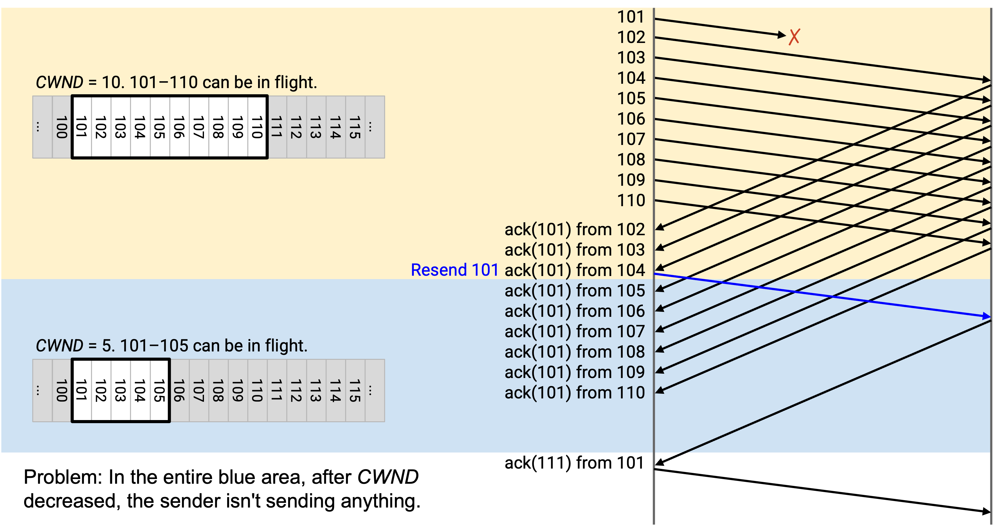
In summary: The isolated packet loss caused the window to get stuck, which causes the sender to stall and send nothing. Eventually, when that packet is re-sent and acked, the window leaps forward, causing the sender to scramble and send a bunch of new packets at once. The sender now has to wait another round-trip for those new packets to get acked, before it can resume business as usual.
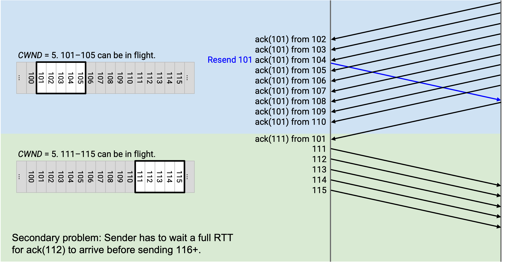
A few notes about this problem:
If the problem is still kind of hard to grasp, it might help to note that this problem is more due to the TCP sliding window scheme, and not really due to the congestion control scheme. Congestion control causes the window to shrink, but even if the window didn’t shrink, the sender would still be forced to stall until 101 is received and the window leaps forward.
When we think about this problem intuitively, it helps to draw the diagrams of the sender’s window, marking off the bytes that have been acked. For example, after the triple duplicate acks, we mark 102, 103, 104 as received, and the window allows 101 (first unacked byte) through 105 to be in flight.
However, this isn’t really what the sender sees. Remember, the sender only sees cumulative acks, so it doesn’t actually know that 102, 103, and 104 were received. The sender can deduce that 3 packets in the window (that are not 101) were received, but it doesn’t know which 3 packets exactly.
Finally, note that after we get 3 duplicate ack(101) messages, we re-send 101, and we never re-send 101 again, even if more duplicate ack(101) messages come in. This is just the TCP rule for re-sending on duplicate acks.
Fast Recovery: The Idea
So, how do we solve this problem? Ideally, we don’t want the sender to stall, and we want the sender to keep sending later packets (111 onwards), even if 101 gets lost.
Notice that even though the sender can’t deduce exactly which packets arrive, the sender can deduce that later (non-101) packets are getting received.
When we see ack(101), generated from 102 being received, we don’t actually know that 102 was received, but we know some packet (non-101) got received. Therefore, only 9 packets remain in flight.
When we see another ack(101), generated from 103 being received, we again don’t know that 103 specifically was received, but we know that another packet (non-101) got received. Therefore, only 8 packets remain in flight.
As we keep receiving duplicate ack(101) messages, we can deduce that fewer packets remain in flight:
After ack(101) from 102: 9 packets in flight.
After ack(101) from 103: 8 packets in flight.
After ack(101) from 104: 7 packets in flight.
After ack(101) from 105: 6 packets in flight.
After ack(101) from 106: 5 packets in flight.
After ack(101) from 107: 4 packets in flight.
After ack(101) from 108: 3 packets in flight.
After ack(101) from 109: 2 packets in flight.
After ack(101) from 110: 1 packet in flight.
Eventually, after we get ack(101) nine times (from 102 through 110 being received), we know that only 1 packet remains in flight, namely 101.
After the isolated loss, we really want CWND to be 5, which means we want 5 packets in flight at any given time. By the time we get ack(101) from 107, we can deduce that only 4 packets remain in flight. (In reality, they are 101, 108, 109, 110, though the sender doesn’t know that.)
At this point, we’d like to be able to send 111, for a total of 5 packets in flight. But the window won’t let us do that, because the window is still stuck at 101 (first unacked byte) through 105 (CWND bytes later).
The key idea that will un-stall the sender is: Let’s grant the sender temporary credit for each duplicate ack.
When a duplicate ack arrives, we can deduce that one fewer packet is in flight, though we don’t know which one. To account for this, we will artificially extend the window by 1 packet, to allow the sender to send one more packet.
Fast Recovery: The Solution
Let’s take this idea of artificially extending the window for each duplicate ack, and apply it to the example from before.
As before, the window starts at 101 through 110, and we send out 10 packets.
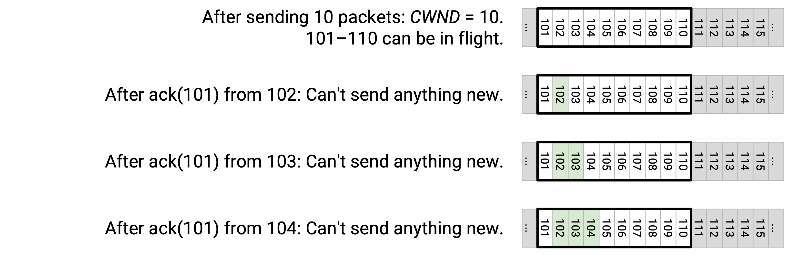
As before, we get ack(101) from 102, the window stays unchanged, and we can’t send anything new.
As before, we get ack(101) from 103, the window stays unchanged, and we can’t send anything new.
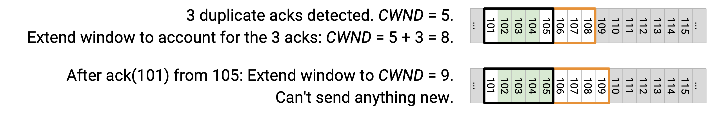
As before, we get ack(101) from 104, the window stays unchanged, and we can’t send anything new.
The third duplicate ack means we decrease CWND to 5, so the window is now 101 through 105.
However, we got 3 acks, so we artificially extend the window by 3 to account for those acks. Thus, CWND is actually set to 5 + 3 = 8.
Next, we get ack(101) from 105. This allows us to extend the window again, to 9. Now the window spans 101 through 109, so we still can’t send new packets.
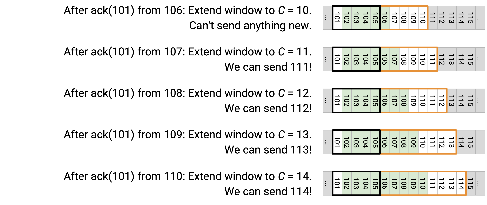
Next, we get ack(101) from 106. We extend the window again to 10, spanning 101 through 110, and we can’t send anything new.
Next, we get ack(101) from 107. We extend the window again to 11, spanning 101 through 111. We can now send out 111!
Next, we get ack(101) from 108. We extend the window again to 12, spanning 101 through 112. We can now send out 112!
Next, we get ack(101) from 109. We extend the window again to 13, spanning 101 through 113. We can now send out 113!
Next, we get ack(101) from 110. We extend the window again to 14, spanning 101 through 114. We can now send out 114!
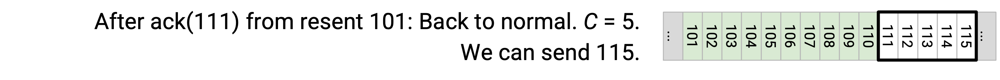
Eventually, we get ack(111) from the re-sent 101. At this point, we can reset CWND to its original intended value of 5, so that the window spans 111 through 115. This allows us to send out 115!
With this fix, we have solved our problem of the stalled sender. Originally, the sender had to wait for the re-sent 101 to be acked before sending new packets. Now, the sender is now able to keep sending packets before the re-sent 101 is acked.
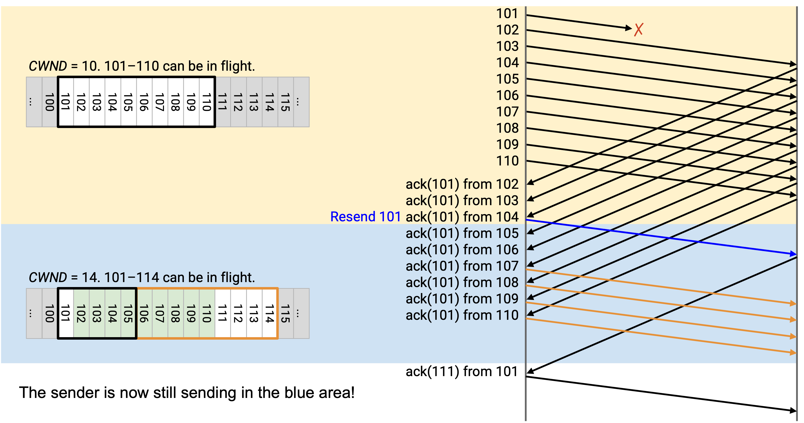
We also solved the secondary problem from earlier, where the window leapt forward and we sent a burst of new packets (111 through 115). Now, 111 through 114 were sent out earlier, and when the window leapt forward, we only had to send out 115.
Without this fix, we had to stall for another round-trip while waiting for the burst of 111 through 115 to be acked. Now, because we stayed busy earlier and sent out 111 through 114, they’ll get acked earlier, and we can keep sending 116 and beyond without that entire RTT of stalling.
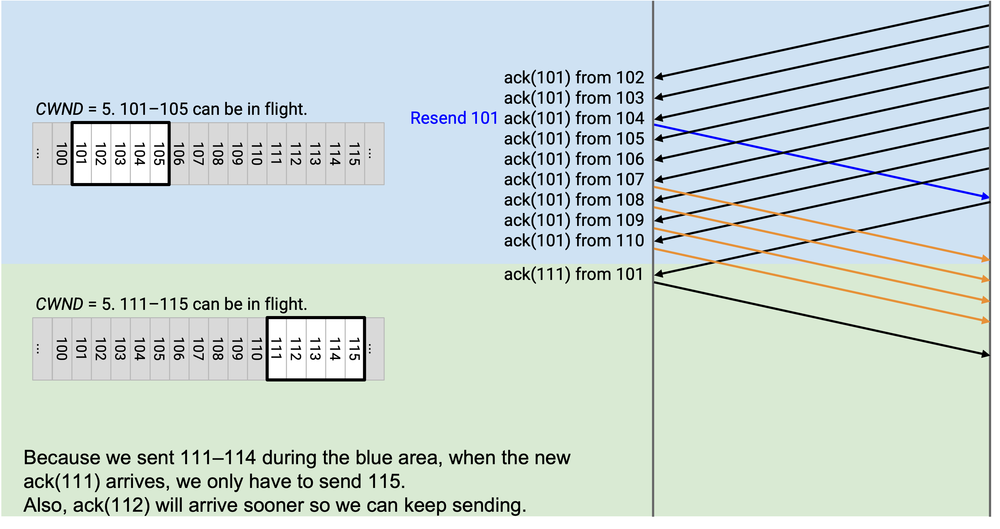
Another way to look at this fix is to focus on the packets in the artificially-extended window.
When we get the third duplicate ack, the CWND shrinks to 5, but we artificially extend for the 3 duplicate acks for a CWND of 8. If you look at this extended window, 3 of the packets are acked (102, 103, 104, though we don’t know it’s these), and the other 5 are in-flight. This achieves our intended window of 5 packets in-flight.
Next, when we get another ack(101) from 105, the window extends to 9. Again, if you look in this window, 4 of the packets are acked (we don’t know which), and the other 5 are in-flight, giving us our intended window of 5 in-flight packets.
When we get ack(101) from 106, the window extends to 10, including 5 received packets (from 5 duplicate acks), plus 5 in-flight packets (intended window size).
At every step, in our extended window, if you don’t count the packets that have been acked, there are exactly 5 packets in-flight in the window. Again, we don’t know exactly which packets in the window are acked, but we can use the duplicate acks to count how many packets were acked, and use that count to keep 5 in-flight packets.
When we get ack(101) from 107, the window extends to 11, including 6 received packets (from 6 duplicate acks). The other 5 packets in the window are allowed to be in-flight.
At this point, we sent 10 packets originally, and we got 6 duplicate acks, which tells us that only 4 packets remain in flight. This allows us to send out 111. The artificially-extending window captures this reasoning, because it extends the window to include 111.
When we get ack(101) from 108, we deduce that now, one fewer packet is in flight. So we artificially extend the window again to 12, which allows 112 to be sent.
Fast Recovery: Implementation
When we detect packet loss from duplicate acks, we temporarily enter the fast recovery mode, where additional duplicate acks artificially extend the window to prevent stalling.
Fast recovery mode is triggered when we receive 3 duplicate acks. Instead of just halving CWND, as we did before, we now set CWND to CWND/2 + 3, where the window is artificially extended by 3 for the 3 duplicate acks we got. We also set SSTHRESH to CWND/2, so that we remember the new safe rate for later.
While in fast recovery mode, every additional duplicate ack causes CWND to increase by 1, allowing the window to artificially extend.
Eventually, when we receive a new, non-duplicate ack, we leave fast recovery mode and set CWND to SSTHRESH. Note that while we were artificially extending the window, SSTHRESH always helped us remember the original halved rate that we want to ultimately send at.
TCP State Machine
We are finally ready to put all the pieces together and implement TCP, with congestion control.
The sender maintains 5 values:
The duplicate ack count helps us detect loss earlier than timeouts. It’s initialized to 0.
The timer is used to detect loss. There’s just a single timer.
RWND is used for flow control (don’t overwhelm recipient buffer).
CWND is used for congestion control. It’s initialized to 1 packet.
SSTHRESH helps the congestion control algorithm remember the latest safe rate. It’s initialized to infinity.
The recipient maintains a buffer of out-of-order packets.
The sender responds to 3 events: Ack for new data (not previously acked), duplicate ack, and timeout.
The recipient responds to receiving a packet, by replying with an ack and a RWND value.
Let’s see how the sender responds to each of the 3 events.
When we receive an ack for new data, not previously acked: If in slow-start mode, we increase CWND by 1. This allows the CWND to double each RTT. If we’re in fast-recovery mode, we set CWND to SSTHRESH, so that we leave fast recovery (since we just got a new ack). If we’re in congestion avoidance mode, we add 1/CWND to CWND, so that CWND increases by 1 per RTT (additive increase). We also reset the timer, reset the duplicate ack count, and, if the window allows, send new data.
When we receive a duplicate ack, we increment the duplicate ack count. If the count reaches 3, we re-send the left-most packet in the window. This is sometimes called fast retransmit. We also enter fast-recovery mode by setting SSTHRESH to CWND/2 (remember last safe rate) and set CWND to CWND/2 + 3 (adding 3 to artifically extend the window for duplicate acks). If the count exceeds 3, we stay in fast-recovery mode and artificially extend the CWND by 1 for every subsequent duplicate ack.
When the timer expires, we re-send the left-most packet in the window. We also go back to slow-start mode, setting SSTHRESH to CWND/2 (remembering the last safe rate), and resetting CWND back to 1 packet.
The congestion control state machine shows the 3 possible modes that TCP can be in, and the conditions that trigger transitions between the modes.
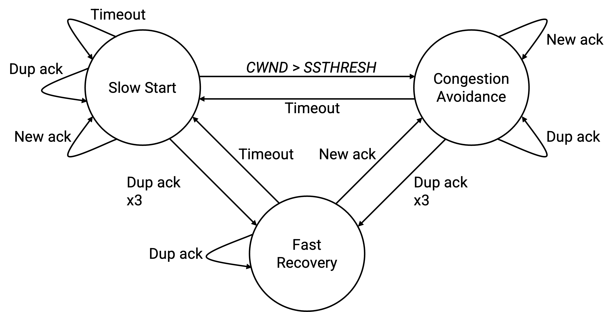
We enter fast-recovery mode if we receive 3 duplicate acks. Once we’re in this mode, any further duplicate acks keep us in fast-recovery mode (keep artificially extending window). To leave fast-recovery mode, either a timeout switches us back to slow-start mode, or a new ack lets us go back to congestion-avoidance mode.
A timeout triggers slow-start mode. Any further acks (duplicate or new) keep us in slow-start. Eventually, if CWND exceeds SSTHRESH (the safe rate), we enter congestion avoidance mode. Or, if we detect loss, we halve the rate and enter fast-recovery mode for a bit before going to congestion-avoidance mode.
In congestion avoidance mode, new acks keep us in this mode (additive increase), but duplicate acks send us to fast-recovery mode, and timeouts send us to slow-start mode.
TCP Congestion Control Variants
There are several variants of the TCP congestion control algorithm, all implemented in the end host’s operating system. Fun fact: The names are related to the Berkeley Software Distribution (BSD) operating system.
In TCP Tahoe, if we get three duplicate acks, we reset CWND to 1, instead of halving CWND.
In TCP Reno, if we get three duplicate acks, we halve CWND. On timeout, we reset CWND to 1.
TCP New Reno is the same as Reno, but adds fast recovery. This is what we just implemented.
Other variants exist too. In TCP-SACK, we add selective acknowledgments where acks contain more detail (e.g. received all up to 13, and 18 too).
How can all these different variants co-exist? Why don’t we need a single uniform protocol that everybody speaks? Remember, congestion control is implemented at the end hosts, so the sender can do whatever they want to adjust their rate. Ultimately, the network and the other end hosts just see TCP packets being sent at a (hopefully reasonable) rate, and they don’t care how the rate is being computed. The underlying TCP packet format doesn’t change with the different congestion control algorithms.
Not all protocols are compatible, though. If you use the TCP-SACK variant with selective acknowledgements, and I use TCP Tahoe, we have a problem. You expect selective acks, but I’m only providing cumulative acks.